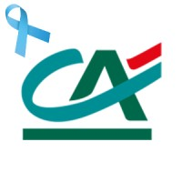

<% meta("../meta.json") %><% meta() %><% url = url + "/about/"; const hasPosts = metas("../posts").some(p => p.meta.published && p.meta.listed !== false); %>
<%= render("../_partials/header.html", { title, description, url }) %>

<div class="about" data-progress data-toc="h2">

<header class="page-header about-hero">
<p class="eyebrow reveal">About</p>
<h1 class="page-title reveal-1" style="margin-top: 0.9rem;">Hi, I'm Araharan.</h1>
<p class="page-lead reveal-2">I'm a security engineer for software and AI systems, from code to cloud. I started in backend engineering, and now I secure the whole path: the application, the CI/CD and ML pipelines, the cloud it runs on, and the AI features on top.</p>
<div class="hero-actions reveal-3">
<a href="#contact" class="btn btn-primary">Get in touch</a>
<% if (hasPosts) { %><a href="/posts/" class="btn btn-ghost">Read my writing <span class="arrow" aria-hidden="true">&rarr;</span></a><% } else { %><a href="https://github.com/haranloga" class="btn btn-ghost" rel="me noopener">GitHub <span class="arrow" aria-hidden="true">&rarr;</span></a><% } %>
</div>
<dl class="fact-grid reveal-4">
<div class="fact"><dt class="fact__label">Focus</dt><dd class="fact__value">Application, cloud &amp; AI security</dd></div>
<div class="fact"><dt class="fact__label">Code</dt><dd class="fact__value">Java, Python, Go, TypeScript</dd></div>
<div class="fact"><dt class="fact__label">Education</dt><dd class="fact__value">MSc Cyber Security (UWL), BSc (Hons) IT (UoM)</dd></div>
<div class="fact"><dt class="fact__label">Currently</dt><dd class="fact__value">Pursuing OSCP &amp; AI red-team certs</dd></div>
</dl>
</header>

<section class="section about-section" id="connected">
<h2 class="section-title">How it all connects</h2>
<p class="section-lead">These aren't separate jobs to me. They're the same piece of software at different stages: written, built, shipped, and run. Because I started as a backend engineer, I read a pipeline or an AI agent the way the person who built it does, and that's usually where the weak spots are.</p>
<ol class="stack">
<li class="card stack__item">
<span class="stack__num" aria-hidden="true">01</span>
<div>
<h3>The code: application security</h3>
<p>Threat modelling, security code review, and API security for services in Java (Spring Boot), Go, Python, and TypeScript.</p>
</div>
</li>
<li class="card stack__item">
<span class="stack__num" aria-hidden="true">02</span>
<div>
<h3>The pipeline: DevSecOps &amp; MLOps security</h3>
<p>Scanning and gates in CI/CD for dependencies, secrets, containers, and infrastructure as code. For ML pipelines, the same checks plus where models and weights come from.</p>
</div>
</li>
<li class="card stack__item">
<span class="stack__num" aria-hidden="true">03</span>
<div>
<h3>The platform: cloud security</h3>
<p>Cloud security architecture on AWS, Azure, and GCP: landing zones, IAM boundaries, and network segmentation designed before workloads ship. Plus posture reviews, the platforms' own security services, and monitoring in Microsoft Sentinel and Splunk.</p>
</div>
</li>
<li class="card stack__item">
<span class="stack__num" aria-hidden="true">04</span>
<div>
<h3>The AI layer: AI security</h3>
<p>Testing LLM apps, RAG systems, and agents for prompt injection, tool misuse, and data leaks.</p>
</div>
</li>
</ol>
<div class="roles">
<p class="roles__label">Roles I step into</p>
<div class="chips"><span class="chip chip--strong">Security Engineer</span><span class="chip chip--strong">Application Security Engineer</span><span class="chip chip--strong">DevSecOps Engineer</span><span class="chip chip--strong">Cloud Security Engineer</span><span class="chip chip--strong">AI Security Engineer</span></div>
</div>
</section>

<section class="section about-section" id="story">
<h2 class="section-title">My story</h2>
<div class="about-body">
<p>I started as a backend engineer, writing services and APIs in Java (Spring Boot), Go, Node.js, and Python. Over time I moved into security, but that background still shapes how I work. When I review an application or a pipeline, I read it as someone who has built one.</p>
<p>Most of my work now is application security, DevSecOps, and cloud security architecture: landing zones, IAM boundaries, and network segmentation, often around Kubernetes workloads. Lately I've also spent a lot of time on AI systems: LLM apps, RAG pipelines, and agents built with LangChain and LangGraph. They are reaching production faster than anyone is testing them, and problems like prompt injection and over-permissioned tools are very real.</p>
<p>Right now I'm digging into how LLMs are served, mostly vLLM: how continuous batching keeps GPUs busy per iteration instead of per request, how PagedAttention stores the KV cache in small blocks so memory doesn't fragment, and how speculative decoding uses a small draft model to speed things up without changing the output. Same habit as everything else: I want to understand how something is built before I try to secure it.</p>
<p>Outside of work I play Hack The Box and CTFs, help people who are trying to get into security, and build agentic AI apps and play with open-source models for fun. I'm also working towards the OSCP. This blog is where I write up what I learn, and the <a href="/projects/">projects page</a> has the things I've built.</p>
</div>
</section>

<section class="section about-section" id="education">
<h2 class="section-title">Education</h2>
<div style="display:grid;grid-template-columns:repeat(auto-fit,minmax(220px,1fr));gap:2.5rem;margin-top:1.75rem;max-width:640px;">
<div style="text-align:center;">
<p style="font-size:0.78rem;font-weight:700;letter-spacing:0.04em;text-transform:uppercase;color:var(--accent);margin:0 0 1.1rem;">MSc Cyber Security</p>

<p style="font-size:0.9rem;color:var(--fg-muted);line-height:1.6;margin:1.1rem 0 0;">University of West London<br>London, UK</p>
</div>
<div style="text-align:center;">
<p style="font-size:0.78rem;font-weight:700;letter-spacing:0.04em;text-transform:uppercase;color:var(--accent);margin:0 0 1.1rem;">BSc (Hons) Information Technology</p>

<p style="font-size:0.9rem;color:var(--fg-muted);line-height:1.6;margin:1.1rem 0 0;">University of Moratuwa<br>Moratuwa, Sri Lanka</p>
</div>
</div>
</section>

<section class="section about-section" id="ai-security">
<h2 class="section-title">What I look for in AI systems</h2>
<p class="section-lead">When an LLM can call tools, read documents, or browse the web, anything it reads can try to give it orders. These are the problems I test for most:</p>
<ul class="feature-list">
<li><span class="feature-list__title">Prompt injection</span><span class="feature-list__desc">Instructions hidden in documents, emails, web pages, or tool output that change what the model does.</span></li>
<li><span class="feature-list__title">Over-permissioned tools</span><span class="feature-list__desc">Agents that can read, write, or call more than they need, so one bad input can do real damage.</span></li>
<li><span class="feature-list__title">RAG poisoning</span><span class="feature-list__desc">Bad content in a knowledge base that ends up steering the answers.</span></li>
<li><span class="feature-list__title">Model supply chain</span><span class="feature-list__desc">Untrusted model files and unsafe formats like Pickle that can run code when they're loaded.</span></li>
</ul>
<p class="section-lead" style="margin-top: 1.25rem;">I map findings to the OWASP Top 10 for LLM Applications and MITRE ATLAS.</p>
</section>

<section class="section about-section" id="toolkit">
<h2 class="section-title">Toolkit</h2>
<p class="section-lead">Tools I use regularly.</p>
<div class="toolkit">
<div class="toolkit__row"><span class="toolkit__label">Languages</span><div class="chips"><span class="chip">Java</span><span class="chip">Python</span><span class="chip">Go</span><span class="chip">TypeScript</span><span class="chip">Bash</span><span class="chip">PowerShell</span></div></div>
<div class="toolkit__row"><span class="toolkit__label">Backend &amp; APIs</span><div class="chips"><span class="chip">Spring Boot</span><span class="chip">Node.js</span><span class="chip">React</span><span class="chip">Microservices</span><span class="chip">REST APIs</span><span class="chip">OAuth / OIDC</span><span class="chip">JWT</span></div></div>
<div class="toolkit__row"><span class="toolkit__label">Application security</span><div class="chips"><span class="chip">Threat modelling</span><span class="chip">Semgrep</span><span class="chip">SonarQube</span><span class="chip">CodeQL</span><span class="chip">Burp Suite</span><span class="chip">OWASP ZAP</span><span class="chip">HashiCorp Vault</span></div></div>
<div class="toolkit__row"><span class="toolkit__label">DevSecOps</span><div class="chips"><span class="chip">Snyk</span><span class="chip">Trivy</span><span class="chip">Checkov</span><span class="chip">Gitleaks</span><span class="chip">TruffleHog</span><span class="chip">Dependabot</span><span class="chip">OWASP Dependency-Check</span><span class="chip">SCA &amp; SBOM</span><span class="chip">Cosign / Sigstore</span><span class="chip">OPA / Conftest</span><span class="chip">Falco</span></div></div>
<div class="toolkit__row"><span class="toolkit__label">CI/CD &amp; platform</span><div class="chips"><span class="chip">GitHub Actions</span><span class="chip">GitLab CI</span><span class="chip">Jenkins</span><span class="chip">Docker</span><span class="chip">Kubernetes / EKS</span><span class="chip">Terraform</span><span class="chip">Helm</span><span class="chip">Ansible</span></div></div>
<div class="toolkit__row"><span class="toolkit__label">Cloud security</span><div class="chips"><span class="chip">AWS</span><span class="chip">Azure</span><span class="chip">GCP</span><span class="chip">IAM</span><span class="chip">GuardDuty</span><span class="chip">Security Hub</span><span class="chip">Defender for Cloud</span><span class="chip">Key Vault</span><span class="chip">Cloud Armor</span><span class="chip">Prowler</span><span class="chip">ScoutSuite</span></div></div>
<div class="toolkit__row"><span class="toolkit__label">Monitoring</span><div class="chips"><span class="chip">Microsoft Sentinel</span><span class="chip">Splunk</span></div></div>
<div class="toolkit__row"><span class="toolkit__label">AI security</span><div class="chips"><span class="chip">LLM red-teaming</span><span class="chip">RAG security</span><span class="chip">LangChain</span><span class="chip">LangGraph</span><span class="chip">MCP</span><span class="chip">OWASP LLM Top 10</span><span class="chip">MITRE ATLAS</span></div></div>
<div class="toolkit__row"><span class="toolkit__label">Standards</span><div class="chips"><span class="chip">ISO 27001</span><span class="chip">SOC 2</span><span class="chip">PCI DSS</span></div></div>
</div>
</section>

<section class="section about-section" id="clients">
<h2 class="section-title">Worked with</h2>
<div class="logo-grid">
<div class="card logo-tile"><span>Alnylam Pharmaceuticals</span></div>
<div class="card logo-tile"><span>CACEIS</span></div>
<div class="card logo-tile"><span>Cambrex</span></div>
<div class="card logo-tile"><span>Cr&eacute;dit Agricole</span></div>
<div class="card logo-tile"><span>HCLTech</span></div>
<div class="card logo-tile"><span>SenzMate IoT Solutions</span></div>
<div class="card logo-tile"><span>Teceze</span></div>
</div>
</section>

<section class="section about-section" id="contact">
<h2 class="sr-only">Get in touch</h2>
<div class="card contact-card">
<p class="eyebrow" style="justify-content: center;">Get in touch</p>
<h3 style="margin-top: 0.6rem; font-size: 1.5rem; letter-spacing: -0.03em;">Say hello</h3>
<p>I'm open to security engineering roles, consulting, and talks. If you need help with application security, a threat model, your CI/CD or cloud setup, or an AI feature you're about to ship, send me a message.</p>
<div class="hero-actions">
<a href="https://www.linkedin.com/in/dream4ip/" class="btn btn-primary" rel="me noopener">Message me on LinkedIn</a>
<a href="https://github.com/haranloga" class="btn btn-ghost" rel="me noopener">GitHub</a>
<a href="https://twitter.com/haran_loga" class="btn btn-ghost" rel="me noopener">X / Twitter</a>
</div>
</div>
</section>

</div>

<%= render("../_partials/footer.html") %>
